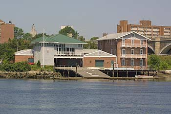

The Offical Homepage
| INFORMATION |
| Home |
| Schedule & Results |
| Roster |
| Coaches |
| Marston Boathouse |
| History |
| Photos |
| Alumnae |
| Parents List |
| Links |
Marston Boathouse

The Hunter S. Marston Boathouse is the home of men's and women's crew at Brown and is located close to India Point Park in Providence on the Seekonk River, where all crew races are held.
The Marston Boathouse was purchased by the University in 1966 with funds given by Hunter S. Marston, Class of 1908. The building, which had previously been used by the Saltesea Packing Company as a fish processing plant, was remodeled and dedicated on October 7, 1967.
Marston Boathouse is an outstanding facility with storage space for 18 eights, seven fours, five pairs, and two singles. The boathouse is fully equipped, giving Brown's rigger the ability to make repairs on site, and can handle all the needs of a competitive rowing program.
On November 12, 1994, the boathouse was rededicated after extensive renovations were done to completely modernize the facility. Both the men's and women's teams have expanded locker and shower space for all rowers. Marston also houses a 16-seat indoor rowing tank, a separate weight room for men and women, and 34 ergometers for each team.
Directions:Marston Boathouse is located at the foot of the Seekonk River, just under the Washington Bridge.
From 95: Take Route 195 East to Gano Street exit. At the end of the ramp, make a left onto Gano Street. Continue under the bridge to the end of the road and make a left. The boathouse is located at the end of this road on the left.
Brown University
258 India St, Box 1932
Providence , RI 02912
(401) 863-2613